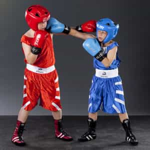

Vic is a former educator who escaped the female-dominated school system for something more rewarding. He is free now to be a man, working amongst other men whom he can challenge, teach, and learn from.


In one of the ten largest school districts in the State of Texas, a particular document has been circulating through the email space of public education: “Ten Cost Effective Strategies for Bullying Prevention,” from the Texas School Safety Center.
The document highlights expectations and procedures regarding bullying, which relies upon the definition of “bullying” according to the United States Department of Health and Human Services (the food stamp bureau), which itself launched the initiative in response to efforts by the Obama administration.
The very first problem with the initiative is the definition of bullying to include both physical and emotional abuse. Bullying literally means “using strength or power to harm or intimidate those who are weaker.” This refers to actual physical harm or the threat of physical harm.
Emotional abuse, which includes shaming, is very different from physical intimidation or violence and is therefore NOT actual bullying. You can read through the strategies for yourself, but I’d like to point out three that I selected in particular and interpret them with that important distinction in mind.
Translation: Make a promise to all students that the place where they spend most of their waking life will be completely devoid of any real-world consequences for being a mediocre human being or being different from the overwhelming majority of their peers.
Bad Idea Because: Members of the current generation of high school youth need to understand that the world will pay more mind to their merit, appearance, and self-portrayal in regards to what it has to offer. Mediocrity does not realize dreams.
Transation: Criminalize the behavior of students who either insist upon higher standards of behavior from their peers or seek to define and protect the boundaries of their own social/cultural sphere.
Bad Idea Because: Without the phenomenon of shaming, entire civilizations would have crumbled by now, for they would not have had the means to prevent threatening levels of social deviance. Imagine how world history might have turned out if bullying had been prevented among the youth of Sparta.
Translation: Indoctrinate all students, even at the cost of academic achievement, to the belief that all forms of bullying or shaming are wrong and can even be legitimately eradicated.
Bad Idea Because: Bullying has been a reality for millennia and will continue to occur as long as our species survives. Convincing our youth otherwise destroys one of the fundamental motivating factors for self-improvement: the perception of mediocrity within oneself.
This aforementioned credo, like many others circulating the public sphere, confounds two distinct terms under one blanket definition, i.e. “bullying” and “shaming.”
At ROK, “shaming” often refers to fat-shaming, slut-shaming, LGBT-shaming, wimp-shaming, loser-shaming, nerd-shaming, and so on, without all of which American society would descend into a pathetic, diluted version of its former self. School districts, feminists, liberals, and society at large consider verbal shaming to be on the same level as physical violence that needs to be addressed in the same way as actual violence. However, bullying by its true definition (physical violence) is not only already against school policy but is actually against the law.
What is not against the law is shaming. In fact, any attempt to prohibit one person from shaming another is a violation the First Amendment, or sites like ROK would not exist.
We had a saying when I was growing up: “Sticks and stones may break my bones, but words will never hurt me.” It meant that our caretakers were responsible for protecting us from physical harm, but before punishing perpetrators of verbal insults, they taught us to stick up for ourselves and develop thick skin. Under the current social paradigm, being made fun of or feeling shamed in any way is emotional abuse and is therefore bullying. Are there laws against emotional abuse? Does it matter? Only if shaming is emotional abuse.
But it clearly is not.
to shame: to make someone feel ashamed; to cause someone to feel ashamed or inadequate by outdoing or surpassing them
In other words, excellence = shaming. This idea is what lies at the heart of American Mediocrity. Don’t do great things, because your greatness is going to make me feel uncomfortable, therefore emotionally abused, ergo you should be punished for being awesome.
Shame should inspire greatness. When someone does better than you and either points it out directly (verbally) or indirectly (through their achievements), those feelings of inadequacy you’re feeling are supposed to motivate you to do push harder. Shame also helps people obtain awareness. Not only by perceiving greatness but also by—gasp—getting made fun of. But instead of seeing it that way, school officials and the federal government want to replace the “Sticks and Stones” philosophy with a victim mentality.
By their rationale, students who become aware of their own inadequacy—be it through verbal notification or simply by perceiving those who outdo them–are victims who need to be protected. Who are these victims? What type of behaviors or characteristics lead to feelings of shame?
In males:
In females:
People who engage in the above listed behaviors would raise their standards if they were made fun of. With the support of school staff and wise parents, they would learn to overcome the ridicule by improving themselves. Teaching them that they are victims only results in more of the bad behavior
As to the physical abuse, I have a solution for that as well.
My father often tells amusing stories about how his school dealt with bullying between boys. First, violence was strictly prohibited in his school, and the punishment was severe. On the other hand, fighting was sanctioned, as long as there were supervisors present… and boxing gloves.
In today’s world, the high school bully faces a punitive response to his unchecked alpha tendencies, leading him down a path of prison-like discipline placements. Conversely, the one being bullied begins a path towards complete and total pussification, since he never learns to really stand up for himself.
In my father’s day, the boys would work out their differences in the gym. The bully would get checked by a real challenge, and the bullied always earned a little respect, even if he got walloped. Am I advocating that kids get into fights? In a way, yes I am.

Was mich nicht umbringt, macht mich stärker
If a bully beats the snot out of another kid, they both look bad. The former is a heartless jerk, and the latter a spineless wimp. On the other hand, if a bully picks on a kid but meets a fight that ends more-or-less evenly, they both still look bad, but in a good way.
A couple of guys working out their alpha aggression on each other may be billed as “macho pigs,” but they automatically look tougher and manlier than the chuckling idiots that stand off to the side and watch. Whether anyone wants to admit it or not, getting into a scuffle where both people walk away can actually raise a man’s value.
Bullying is going to happen, just like premarital sex among teens is going to happen. We can’t stop it or eradicate it, but we can teach those involved with it.
In my youth, I had to deal with bullies. I was short and thin as a rail. I wore glasses and had braces. I knew more about Lord of the Rings than I did about getting in shape. People picked on me. I fought back. I won. I lost. I learned. I grew up. I graduated high school. I became more confident. I got active and more fit. I banged girls. Hooray.
We need to understand that bullies have always been and always will be a part of life and society. Instead of treating recipients of mild “physical abuse” as helpless victims, school districts should try the following three strategies:
Another viable option could be mandatory castration of all males. Just cut off every young man’s testicles so there won’t be any problems with testosterone and therefore aggression. It’s the feminist approach, and it’s already happening figuratively in schools and homes across America. It produces meek, sexless boys and Amazonian, overachieving girls—Harry Potters (but without magic powers) and Hunger Games heroines.
Read More: Why Did A High School Prank Lead To A Young Man’s Suicide?
{kind=link}
{kind=link}